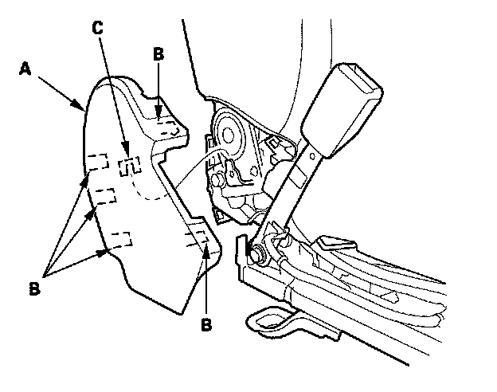

Front Seat
Front Seat Disassembly/ReassemblySpecial Tools Required
KTC trim tool set SOJATP2014 *
* Available through the American Honda Tool and Equipment Program
SRS components are located in this area. Review the SRS component locations and the precautions and procedures before doing repairs or service.
NOTE:
- Put on gloves to protect your hands.
- Take care not to tear the seams or damage the seat covers.
- Use the appropriate tool from the KTC trim tool set to avoid damage when removing components.
- DTC codes will set if the ignition is turned ON (II) with the seats removed.
1. Remove the front seat
2. Remove the screws and release the hook (A), tabs (B), then remove the front cover (C).
3. Remove the recline cover (A).
1. Remove the screw (B) and detach the clips (C) and hooks (D).
2. Pull up the cover, then detach the hooks (E, F).
3. Disconnect the recline switch and up-down switch connector (G), and on the driver's seat, lumbar support switch connector (H).
4. Remove the wire harness (I) from the hook (J).

4. Remove the center cover (A).
1. Release the hooks (B).
2. Pull up the cover, then detach the hook (C).
5. From under the seat cushion, release the hook strips (A) and pull the seat cushion cover (B) back. Disconnect or detach the connectors, detach the harness clips (C), release the wire ties (D), then pull out the harness(es) out through the harness sock (E).
- Driver's seat
- Side airbag connector (F)
- Seat-back heater harness connector (G)
- Recline motor/lumbar support motor harness connector (H)
- Passenger's seat
- Side airbag connector (F)
- ODS unit harness connector (I)
- Recline motor harness connector (J)

6. Remove bolts, then remove the seat-back (A).
7. Assemble the seat-back and seat cushion in the reverse order of disassembly, and note these items:
- Passenger's seat: Calibrate the ODS unit.
- Check if the clips is damaged, and if necessary, replace it with a new one.
- Push the clip and hooks on the covers into place securely.
- Apply multipurpose grease to the moving parts of the seat track.
- Replace the wire ties you removed with new ones.
- Make sure each connector is plugged in properly.
- To prevent wrinkles in the seat cushion cover, stretch the material evenly over the pad before securing the hook strips.